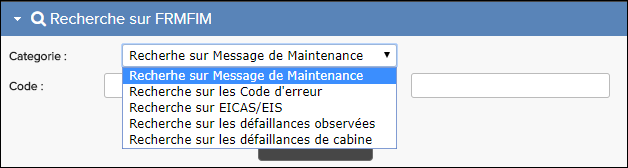

Les types de recherche disponibles sont décrits dans les sections ci-dessous.

Message de Maintenancevous aider à trouver la cause d'un message EICAS ou autre défaut. Chaque message de maintenance a un numéro de message et une description du problème (par exemple, 21-11021 "Chiller Boost Fan ne suit pas la commande"). Chaque message de maintenance a également une tâche FIM associée qui décrit le façon de résoudre le problème. Lisez le chapitre introduction d'une publication d'FRMFIM pour plus d'informations sur les messages de Maintenance. Pour des étapes spécifiques, reportez-vous à Rechercher sur messages de maintenance.
Chaque problème potentiel avec l'avion a un code d'erreur associé. Un code d'erreur n'est pas une catégorie distincte. Elle reflète dans sa description combinaison de symptômes. Lisez le chapitre introduction d'une publication FRMFIM pour plus d'informations sur les codes de défaut.
Pour tous les chapitres d'un FRMFIM, vous pouvez accéder à un Code d'erreur pour voir les messages d'erreur triés par Code d'erreur. Pour la recherche sur le Code d'erreur, vous pouvez rechercher l'un des codes qui apparaissent dans la colonne du Code d'erreur. Pour des étapes spécifiques, reportez-vous à Recherche sur les code d'erreur.
Lisez le chapitre introduction d'une publication FRMFIM pour plus des informations sur les messages EIS. Pour des étapes spécifiques, reportez-vous à Rechercher sur EICAS/EIS.
Les défauts observés du système sont des symptômes de problèmes (autres que les messages EICAS) que l'équipage de vol peut remarquer. La défaillance observée pourrait être le signe que quelque chose doit être fixé sur l'avion.
Au plus haut niveau de la Table des matières du FRMFIM, vous pouvez accéder à LA LISTE ALPHANUMÉRIQUES DES DÉFAUTS OBSERVÉS pour voir les défauts en ordre alphanumérique (séparés par des lettres index de page), ou vous pouvez accéder à LA LISTE DES DÉFAUTS DU SYSTÈME OBSERVÉS pour voir les défauts classés par code de défaut (séparés par des chapitres de page). Pour la recherche sur les défaillances observées, vous pouvez rechercher l'un des codes qui apparaissent dans la colonne code de défaillances ou utiliser une partie de tout texte que vous voyez dans la colonne Description. Pour des étapes spécifiques, reportez-vous à Rechercher sur fautes observées.
Le défaillances de cabine sont des symptômes de problèmes qui peuvent se produire avec les systèmes et équipements dans la cabine des passagers.